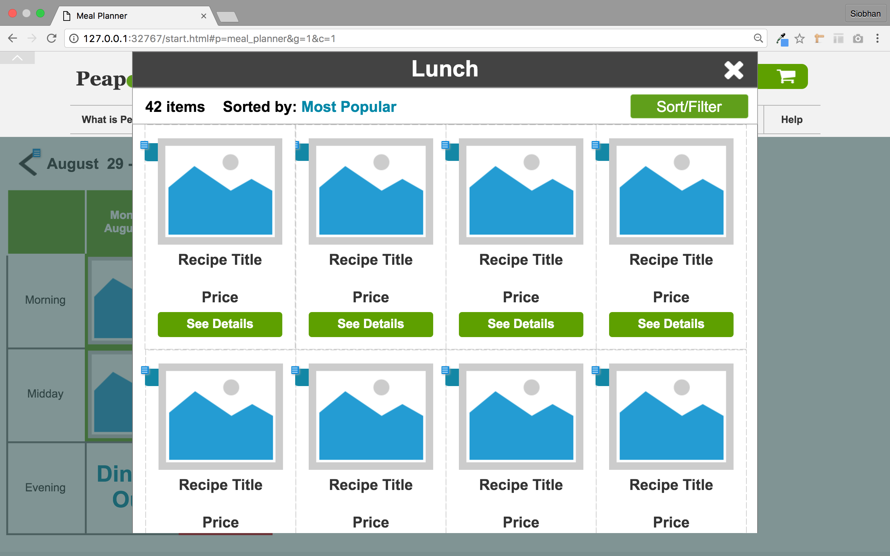

Summary
The Problem
The two main problems identified were:
- Users don’t have time to make home cooked meals
- Users don’t use all the fresh food they buy and it goes to waste
The Opportunity
This presents business opportunities for Peapod.com:
- If users cook at home more often, they will buy more groceries
- If people know that they will actually use ingredients, they are more likely to buy fresh food
The Process
The Solution
To address both the main issues, we must:
- Make it quicker and easier for people to shop by recipe so they cook more often
- Help them plan so they actually use the food they buy
The Product
The PeapodMeals aims to get people cooking at home more often by providing:
- A delivery service powered by Peapod, that allows users to browse recipes and quickly purchase ingredients in one easy flow
- A meal planner that allows users to schedule what they are going to cook for each meal
The Process
Personas and Story Boards
We were given three personas to design for.
Aaral
40 Year Old Doctor
Cares About: Career, Dog, Volunteering
“With the amount I work, I need to find more time to relax...”
Pain Points
- Lack of time
- Going to the store
- Complicated navigation
- Pop-ups
- No ethnic variety
Jackie
24 Year Old Marketing Manager
Cares About: Environment, health, and traveling
“I’ve always liked cooking but I hate wasting food...”
Pain Points
- Confusing navigation
- Flexible delivery options
- Being forced to buy food in larger quantities than she needs
- Websites that are not mobile-friendly
Gilbert
20 Year Old Librarian
Cares About: Social responsibility, Gaming, and Music
“I wish I tried cooking sooner. Food tastes better when you’ve made it yourself... Most of the time...”
Pain Points
- Complicated recipes
- Poor instructions
- Jargon
- Needs help to set up his kitchen
I created storyboards to bring the two primary users and their problems to life.
Aaral
Jackie

Competitive Analysis
In the competitive analysis I looked at other online grocery delivery services, but because this product expands beyond what Peapod.com currently does, I also looked at meal subscriptions sites, recipe sites, and meal planners.
As a result of the competitive analysis, I identified that, in this crowded market, there is a gap for a grocery delivery service that provides an integrated meal planner.
Card Sorting
I did competitive research on several recipe sites and compiled a list of common categories and sub-categories.
The same recipes can be sorted into multiple categories, for example a chicken dish can be in both main ingredients - poultry and course - lunch. When asked where they would go to first to search for a recipe, people’s responses varied. Accordingly, it was important to keep multiple categories so that those who want to search by course can search by course and those who want to search by main ingredient can also search by main ingredient.
I then performed card sorts to ensure that categories and sub-categories were organized intuitively. I found after a few rounds of card sorting that most participants sorted most of the cards in the same way. I did some further rounds of testing with just the problem cards and as a result added a category (dish type).
Site Map
The following detail of the site map is the result of the card sort.
User Flows
I used user flows to define what needed to be on the site and how the user would best accomplish the task they set out to complete. Below is an illustration of the main flow.

Sketching and Wireframes
I then moved on to sketching wireframes. I used quick sketches to ideate then created a low-fidelity prototype in Axure to simulate interactions for user testing.
User Testing
I tested the wireframes on several users by giving them a simple task to complete.
All the users were able to complete the task but the drop down menus used for navigation created a jumpy flow and did not encourage browsing.
In the mid-fidelity prototype, I switched to a sidebar menu that is a more efficient use of space when dealing with a lot of categories and subcategories and is more conducive to browsing.
The Product
Mid-Fidelity Prototype
To bring the interactive prototype up to the next level of fidelity, I created a logo based on the Peapod.com logo and added color to the prototype following the peapod.com color scheme.
Home Page
This home page echoes the structure of the peapod.com home page, with explanatory tiles, advertising banners, and special and recommended items.
Browsing Recipes
Sidebar menu shows the categories determined in the card sort and shown on the site map.
Categories expand down to show more specific subcategories.
Sort and filter options further aid the user to efficiently find an enticing recipe.
Recipe Detail
The recipe detail page allows the user to see the recipe.
The call to action buttons are clear and large. Position and color place the most emphasis on the “Shop Ingredients” button.
Suggestions based on the current recipe are included down the right hand side to help the user find similar recipes.
Allergy Information
When the user creates their account, they add information about the people they usually cook for.
This informs the red and green family icons used to show whether each family member can eat a the recipe.
Here we can see a red pop-up indicating that a family member cannot eat this recipe because to contains gluten.
Shopping for Ingredients
When the user clicks on “Shop Ingredients” they are shown the various options for purchasing ingredients.
If they do not want to purchase an ingredient, they simply click on the green selected button to unselect it.
The user is also presented with a list of pantry ingredients. These are ingredients that are required for the recipe but that the user is likely to already have, such as olive oil. These are deselected by default, but can be selected and purchased in exactly the same manner as the other ingredients.
Meal Planner
Recipes can be added to the meal planner directly from the recipe detail and from the meal planner itself.
When a meal has been added an image of the meal is shown with a colored border indicating the status:
- Green: ingredients purchased
- Orange: ingredients in cart
- Red: ingredients need to be added to cart
Adding a Meal to Planner
To add a meal from the meal planner, the user simply clicks on an empty panel.
A pop up opens showing the category of recipes that corresponds to the time of day of the panel (e.g. click on a midday meal, the lunch category is opened).
The user can also choose from their recipes or choose that they are dining out.
Browse Lunch Recipes
If the user chooses to browse recipes, a pop up will open showing the recipes in that category.
